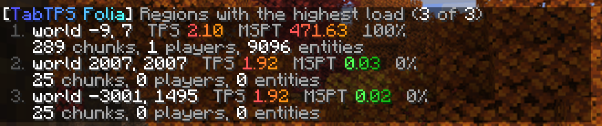
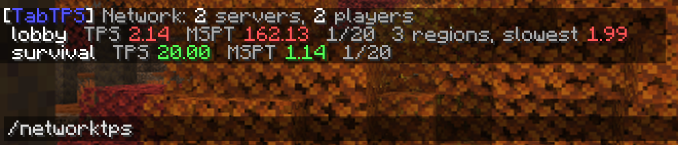

Install
Download the file for your server from Modrinth. There is one plugin jar for every supported server, one Forge jar per Minecraft version and a separate jar for Velocity.
| You run | File | Folder |
|---|---|---|
| Folia, Canvas, Paper, Purpur, Leaf or Spigot (1.20 to 26.3) | tabtps-enhanced-*.jar | plugins/ |
| Forge 26.3 or 1.20.1 | tabtps-forge-mc<version>-*.jar | mods/ |
| Velocity 3.4 or newer | tabtps-velocity-*.jar | plugins/ of the proxy |
Restart the server after you put the file in. The plugin needs Java 17 or newer, the Forge mod for 26.3 needs Java 25.
First steps
TabTPS starts with all displays off, so nobody gets surprised. Try them out on yourself first:
/tabtps toggle tab
/tabtps toggle actionbar
/tabtps toggle bossbarEach command turns that display on or off for you. Players with the right permission can do the same for themselves. To change what the displays show and turn them on for everyone who joins, open the settings menu:
/tabtps guiEverything in that menu is saved to the config files, so you can also edit them by hand and run /tabtps reload.
Config files
The files are created on the first start.
| File | What it holds |
|---|---|
main.conf | General options, update checks, lag alerts, menu style |
display-configs/*.conf | What each display shows, one file per group of players |
themes/*.conf | Colors for good, medium and bad values |
On plugins they live in plugins/TabTPS/, on Forge in config/tabtps/. After editing a file by hand, run /tabtps reload.
main.conf
| Key | Default | What it does |
|---|---|---|
update-checker | true | Asks Modrinth once on startup whether a newer version exists for your platform and Minecraft version. |
update-notify-on-join | true | Tells players with tabtps.updatenotify about a new version when they join. |
update-rates | 250 | Milliseconds between updates, separately for tab, action-bar and boss-bar. |
console-colors | true | Set to false for consoles that cannot show colors. |
lag-alerts | off | Warnings when the server lags, see Lag alerts. |
send-stats-to-proxy | false | Sends this server's values to the Velocity plugin, see Velocity network. |
menu-sounds | false | Plays a sound when switching pages or saving in the chest menu. |
gui-style | auto | Which settings menu opens: auto, dialog or chest. |
permission-priorities | Order in which display config permissions are checked when a player has more than one. | |
ignored-memory-pools | Memory pools that /memory leaves out. | |
help-colors | Colors of the /tabtps help menu. |
Display configs
A display config decides what the tab list, action bar and boss bar show. The default file is display-configs/default.conf and applies to everyone with tabtps.defaultdisplay. Add more files with their own permission to give groups of players different displays. If a player has several, permission-priorities in main.conf decides which one wins.
permission="tabtps.defaultdisplay"
tab-settings {
allow=true
enable-on-login=false
header-modules=""
footer-modules="tps,mspt"
theme=default
}
action-bar-settings {
allow=true
enable-on-login=false
modules="tps,mspt,ping"
}
boss-bar-settings {
allow=true
enable-on-login=false
modules="tps,mspt,ping"
fill-mode=MSPT
overlay=NOTCHED_20
login-delay-seconds=0
}| Key | What it does |
|---|---|
allow | Whether players may turn this display on at all. |
enable-on-login | Turns the display on when a player joins for the first time. |
modules, header-modules, footer-modules | Comma separated list of modules, in the order they appear. |
theme | Name of a file in themes/. |
separator | Text between modules, in MiniMessage, e.g. " <gray>|</gray> ". |
fill-mode | Boss bar only: fill by MSPT, TPS, REVERSE_MSPT or REVERSE_TPS. |
overlay | Boss bar only: PROGRESS, NOTCHED_6, NOTCHED_10, NOTCHED_12 or NOTCHED_20. |
login-delay-seconds | Boss bar only: waits this long after joining, so boss bars of other plugins come first. |
Custom text
Instead of a module list, every display can show your own text in MiniMessage. Use format for the action bar and boss bar, header-format and footer-format for the tab list. Module names work as tags for their value, and <name_label> gives the translated label.
format="<gray>The server runs at <tps> TPS, your ping is <ping>"
footer-format="<tps_label>: <tps> <dark_gray>|</dark_gray> <gray>up for <uptime>"Leave the format empty to go back to the module list.
Themes and colors
A theme sets the colors for good, medium and bad values. For finer steps, add tps-levels and mspt-levels to a theme. The boss bar can change its color by how full it is with levels in its colors section.
tps-levels=[
{threshold=19.5, color=green, secondary-color=dark_green},
{threshold=17, color=yellow, secondary-color=gold},
{threshold=0, color=dark_red, secondary-color=red}
]
levels=[
{percent=0, color=BLUE},
{percent=30, color=GREEN},
{percent=60, color=YELLOW},
{percent=90, color=RED}
]The boss bar follows /tick rate on servers that support it, so a full bar always means the target tick time.
Lag alerts
Lag alerts tell you when the server lags for a while. Players with tabtps.lagalert get a chat message, the console gets a log line and a Discord channel can get a message too. They are off until you turn them on.
lag-alerts {
enabled=true
tps-below=15.0
mspt-above=0
seconds=30
cooldown-seconds=300
notify-recovery=true
discord-webhook=""
}| Key | What it does |
|---|---|
tps-below, mspt-above | The limits. 0 turns that check off. |
seconds | How long the server has to stay past a limit before an alert goes out. |
cooldown-seconds | Minimum time between two alerts. |
notify-recovery | Sends a short message when the lag is over. |
discord-webhook | A Discord webhook URL, starting with https://discord.com/api/webhooks/. Other addresses are ignored. |
On Folia and Canvas the slowest region counts for the TPS check and the busiest region for the MSPT check. The alert names the busiest region, because when one region is overloaded the others slow down too.
Commands
| Command | What it does | Permission |
|---|---|---|
/tabtps toggle <tab|actionbar|bossbar> [player] | Turns a display on or off, for yourself or another player. | display config, tabtps.toggle.others |
/tabtps gui or /tabtps | Opens the settings menu. Without the permission, /tabtps shows the help. | tabtps.gui |
/tabtps regions [count] | Lists the busiest regions. Folia and Canvas only. | tabtps.regions |
/tabtps mobcaps | Lists the mob caps of every world. | tabtps.mobcaps |
/tickinfo, /mspt | TPS and tick time overview, per region on Folia. | tabtps.tps |
/memory, /mem, /ram | Memory pools of the server. | tabtps.tps |
/ping [player], /pingall | Your ping, someone else's, or everyone's. | tabtps.ping, tabtps.ping.others |
/tabtps reload | Loads all config files again. | tabtps.reload |
/networktps, /ntps | Values of every server behind Velocity. Runs on the proxy. | tabtps.network |
On Paper-based servers /mspt is Paper's own command, use /tickinfo there. The toggle command also works with /execute as <player> run tabtps toggle ... from command blocks and data packs.
Permissions
Without a permission plugin every permission below belongs to operators only.
| Permission | Allows |
|---|---|
tabtps.defaultdisplay | Using the default display config. |
tabtps.toggle.others | Toggling displays of other players. |
tabtps.gui | Opening the settings menu and saving changes in it. |
tabtps.reload | Reloading the config, also from the menu. |
tabtps.tps | /tickinfo and /memory. |
tabtps.ping, tabtps.ping.others | Your own ping, and the ping of others. |
tabtps.mobcaps | /tabtps mobcaps. |
tabtps.regions, tabtps.regions.teleport | The region list, and teleporting by clicking a region. |
tabtps.lagalert | Getting lag alerts in chat. |
tabtps.updatenotify | Getting the update message on join. |
tabtps.network | /networktps on Velocity. |
On Forge the permissions go through Forge's permission API, so permission mods like LuckPerms can grant them. In singleplayer the world owner has every permission.
Modules
| Module | Shows |
|---|---|
tps | TPS, of the player's region on Folia |
mspt | Milliseconds per tick, of the player's region on Folia |
ping | The player's ping |
players | Players online |
cpu | CPU usage of the system and the server |
memory | Used, allocated and maximum memory |
uptime | Time since the server started |
lowest_region_tps, median_region_tps, highest_region_tps | TPS across all regions, Folia and Canvas only |
mob_caps | Mob cap usage of the player's world |
mob_cap_<category> | One category: monster, creature, ambient, axolotls, underground_water_creature, water_creature or water_ambient |
Modules that cannot work on a server are left out of the displays and not offered in the settings menu: the region modules need Folia or Canvas, and the mob cap modules do not work there, because Folia counts mob caps per region and cannot count a whole world.
Placeholders
With PlaceholderAPI installed, TabTPS registers these placeholders on its own. With MiniPlaceholders the same values are available as MiniMessage tags, e.g. <tabtps_tps>. Both work on the plugin, not on Forge.
| Placeholder | Value |
|---|---|
%tabtps_tps%, %tabtps_tps_5s%, _1m, _5m, _15m | TPS, of the player's region on Folia |
%tabtps_mspt% | MSPT, of the player's region on Folia |
%tabtps_ping% | The player's ping |
%tabtps_players%, %tabtps_max_players% | Player count |
%tabtps_uptime% | Server uptime |
%tabtps_lowest_region_tps%, %tabtps_median_region_tps%, %tabtps_highest_region_tps% | Region TPS on Folia, N/A elsewhere |
%tabtps_cpu_system%, %tabtps_cpu_process% | CPU usage in percent |
%tabtps_memory_used%, %tabtps_memory_allocated%, %tabtps_memory_max% | Memory in MB |
Add _colored to tps, mspt, ping and the region placeholders to get TabTPS' colors, e.g. %tabtps_tps_colored%.
Folia and regions
Folia ticks the world in regions, each with its own TPS. TabTPS shows every player the values of the region they stand in, and the region modules show the lowest, median and highest TPS of all regions. On servers without regions, tps and mspt show the server-wide values and the region modules are simply left out.
/tabtps regions lists the busiest regions with their center, TPS, MSPT, load and their chunk, player and entity counts. Click a line to teleport to the middle of that region.

Forge
The Forge mod only has to be on the server. Players join with a normal client, and in singleplayer it runs on the built-in server, so you see the displays there too. Its config is in config/tabtps/.
PlaceholderAPI, MiniPlaceholders and the region features are plugin only. The settings menu works on Forge: with dialogs on 26.3 and as a chest menu on 1.20.1.
Velocity network
The Velocity plugin collects the values of all servers behind your proxy and shows them with /networktps.
- Put
tabtps-velocity-*.jarinto the proxy'splugins/folder and restart the proxy. - On every backend server with the TabTPS plugin, set
send-stats-to-proxy=trueinmain.conf. - Run
/tabtps reloadon those servers, then/networktpson the proxy.
Servers send their values every 5 seconds through a player's connection. A server without players keeps its last values and shows how old they are.
